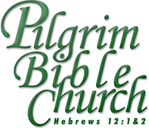

|
Pilgrim Bible Church is meeting at Steilacoom Community Center but we are under certain restrictions due to COVID-19, such as requiring masks and social distancing. Also, we are meeting only for the worship service at 10:30 AM. Please contact us at the e-mail address below if you have any questions. Preaching the Doctrines of Grace Pilgrim Bible Church is a family-friendly Reformed Baptist church located in the Tacoma, Washington, area. We are easily accessible from Gig Harbor and the Peninsula. We seek to exalt Christ through the preaching and teaching of God’s Word, prayer, singing, fellowship, and evangelism. We would love to have you join us for Sunday morning worship! Where We Meet: We meet for Sunday School and Sunday morning worship service at:Contact Us:
Copyright 2000-2020, Pilgrim Bible Church
|